Home tab: big clock, cards

Status bar tapped: system menu

Tasks tab, page 1
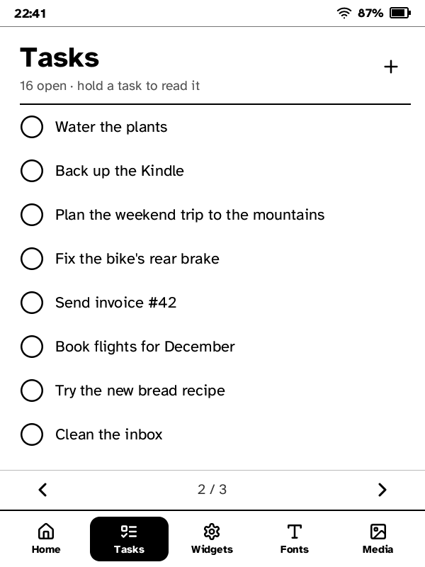
Tasks swiped to page 2
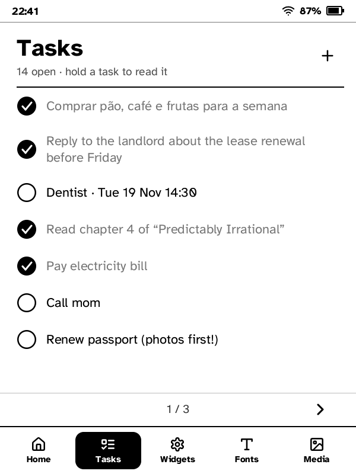
First two tasks ticked

Long-press a task: toast
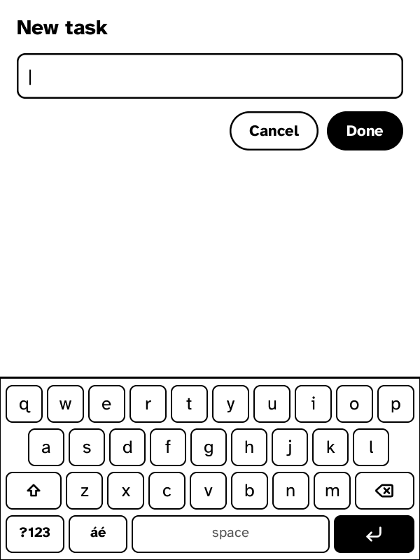
Add-task prompt, empty

Typed text, shift layer on
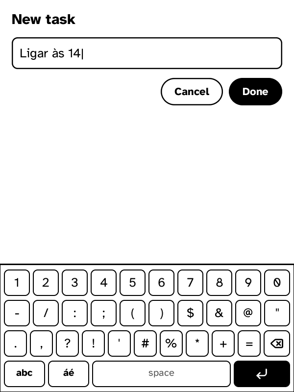
Numbers layer
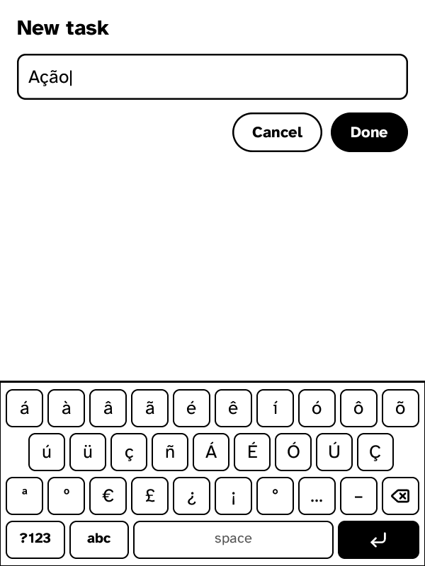
Accents layer
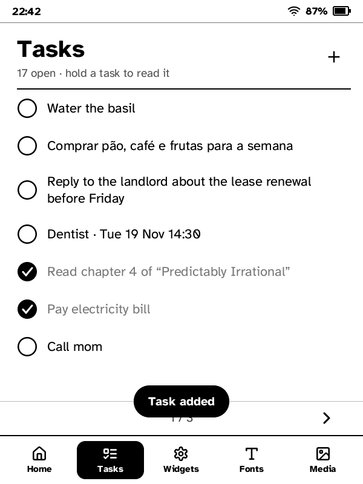
Task added + toast
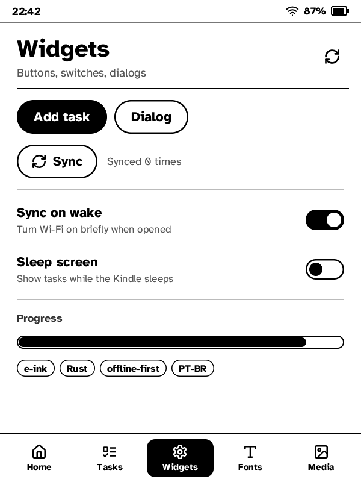
Widgets tab
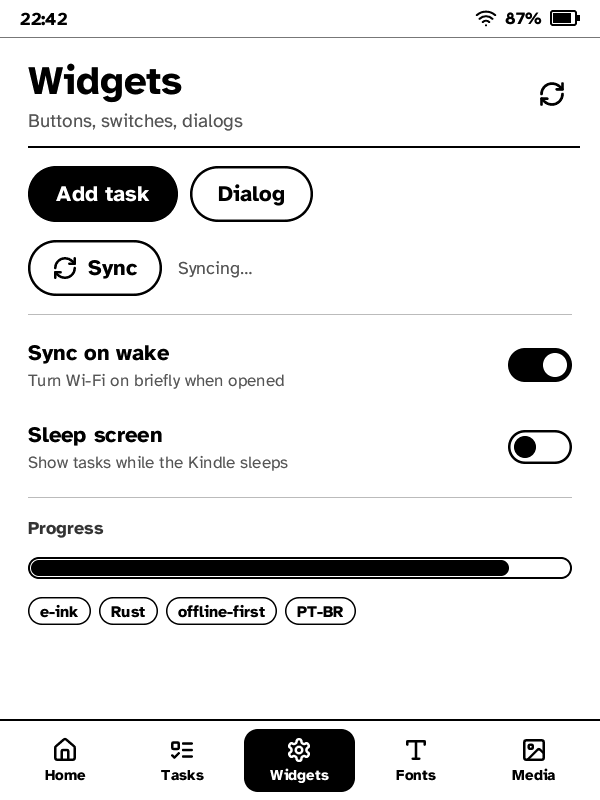
Background job running
Both switches flipped

Modal dialog
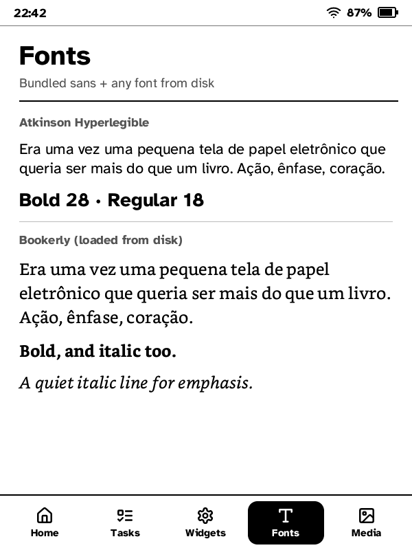
Fonts tab (Bookerly if in assets/fonts)

Dithered photo + icons
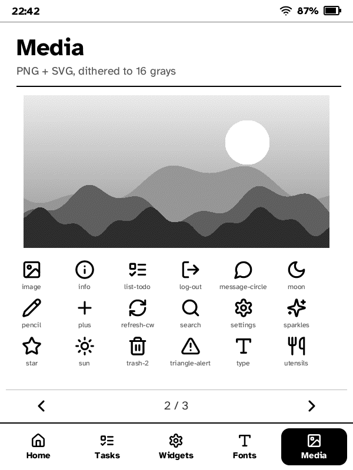
Icon grid page 2

M2 raw graphics demo
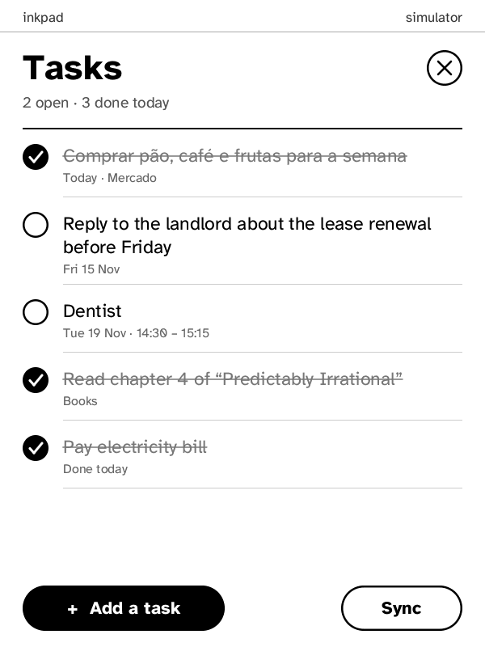
M2 demo after a tap